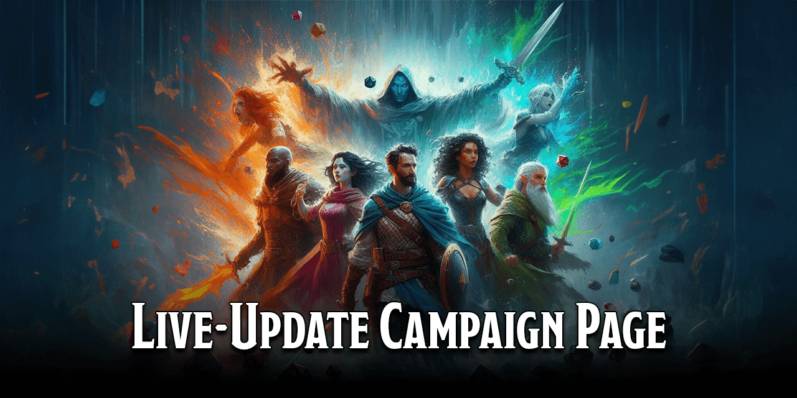
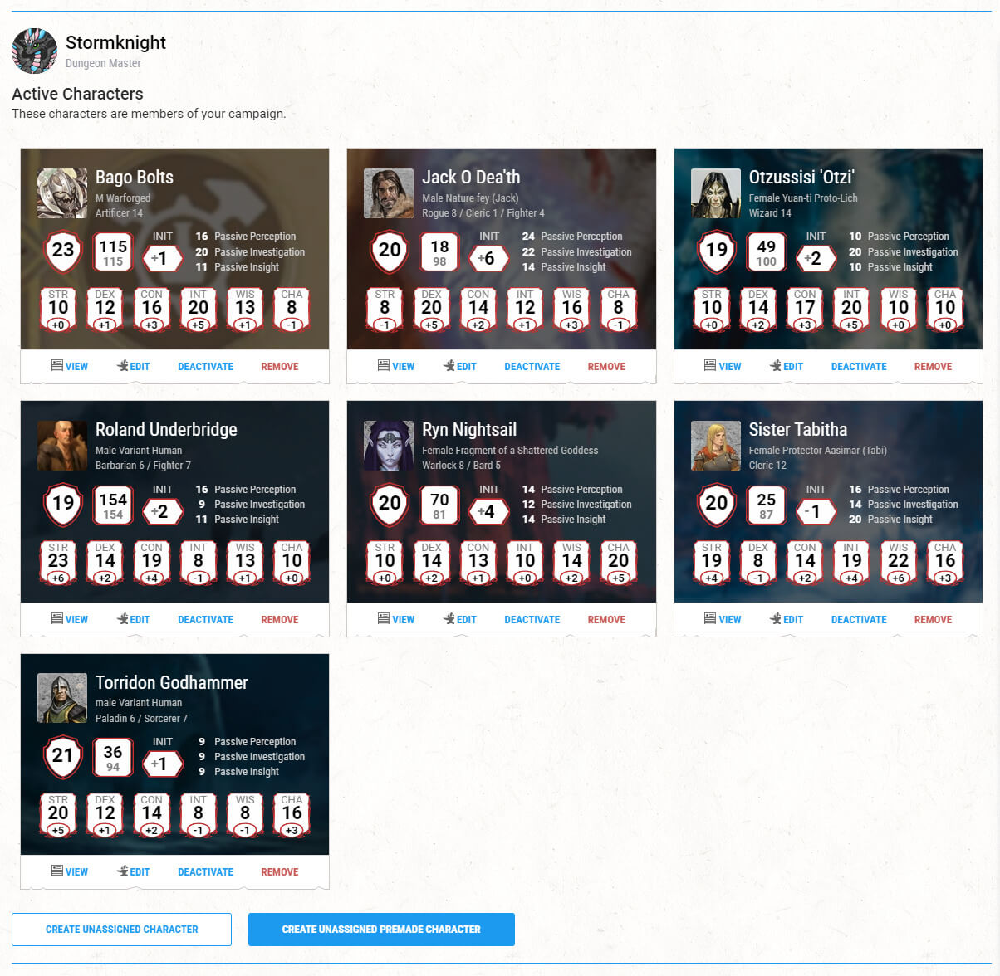

D&D Beyond Live-Update Campaign Page is a script that allows you to view live data about each of the characters in a D&D Beyond campaign from the Campaign page itself.
To use this script, you will need a browser extension that allows you to run User Scripts. There a numerous available to choose from, including:
| Extension | Browser Support |
|---|---|
| Firemonkey | |
| Greasemonkey | |
| Tampermonkey | |
| Violentmonkey |
Install one of these extensions for your browser. If you're not sure, I recommend Tampermonkey.
Ensure you are running a browser extension that takes UserScripts (see Prerequisites above).
Click on the Install Script button below to install this user script to your browser extension, then follow the instructions from your browser extension.
You'll now see additional information displayed on the card of each character, showing:
The data is automatically updated every 60 seconds.
This is how the character cards on the campaign page look with this script running.

Author: Faith Elisabeth Lilley (aka Stormknight)
Project forked from DNDBeyond-DM-Screen by TeaWithLucas - huge thanks for figuring out the DDB API code.
This project uses the MIT license.